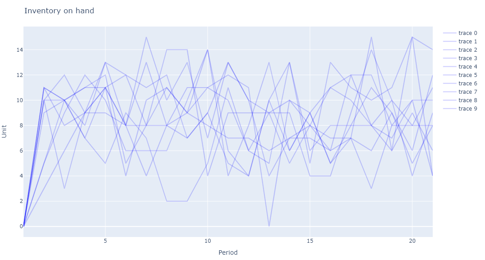

SupplyChainSimulation
SupplyChainSimulation is a package to model and simulate supply chains.
The simulation is built around a loop that keeps track of orders and inventory movements:
- receive_inventory
- place_orders
- receive_orders
- send_inventory
Each step can be customized by applying different policies. The policies can also be optimized to improve the supply chain performance.
Installation
SupplyChainSimulation can be installed using the Julia package manager. From the Julia REPL, type ] to enter the Pkg REPL mode and run
pkg> add SupplyChainSimulationGetting started
The first step to use SupplyChainSimulation is to define the supply chain components. This is done by specifying the products, suppliers, storage locations, and customers.
In the example below we define one product, one supplier, one storage location, and one customer.
horizon = 20
product = Product("product")
supplier = Supplier("supplier")
storage = Storage("storage")
add_product!(storage, product; unit_holding_cost=1.0)
customer = Customer("customer")
l1 = Lane(storage, customer)
l2 = Lane(supplier, storage)The second step is to define the starting states. The initial states represent the supply chain network at the start of the simulation. More than one initial state can be defined to represent potential different situations that have to be simulated or optimized. For example we could have several demand scenarios. In our example, we will create 10 such scenarios with different demand from the customer.
n() = begin
network = SupplyChain(horizon)
add_supplier!(network, supplier)
add_storage!(network, storage)
add_customer!(network, customer)
add_product!(network, product)
add_lane!(network, l1)
add_lane!(network, l2)
add_demand!(network, customer, product, rand(Poisson(10), horizon) * 1.0; sales_price=1.0, lost_sales_cost=1.0)
return network
end
initial_states = [n() for i in 1:10]The third step is to define the policies that we want to use. In this example we use an order up to policy that will place an order to replenish the inventory back to a given value.
policy = OnHandUptoOrderingPolicy(0)
policies = Dict((l2, product) => policy)The next step is to run the simulation or the optimization (depending on whether you already know the policies you want to use or whether you want to find the best policies). In our example we will search the best policy by running the optimizer.
optimize!(policies, initial_states...)
final_states = [simulate(initial_state, policies) for initial_state in initial_states]The final step is to analyze the results. There are various function we can call to get information such as the orders that have been placed, the inventory on hand at any time, and more. There are also plotting functions which provide the information in a graphical way. In our example we will plot the amount of inventory at the storage location over time.
plot_inventory_onhand(final_states, storage, product)The resulting plot is shown below.

Policies
The package comes with several policies predefined, including:
- QuantityOrderingPolicy: Orders a given quantity specific to each time period. The quantity ordered is the same across scenarios and irrespective of the current inventory position.
- OnHandUptoOrderingPolicy: Orders up to a given number based on the number of units on hand; no matter what is on order.
- NetUptoOrderingPolicy: Orders up to a given number based on the net number of units (on hand + in transit + on order - on backlog).
- NetSSOrderingPolicy: Orders up to a given number based on the net number of units (on hand + in transit + on order - on backlog) if the net inventory is below a threshold.
Creating a new policy
Creating a new policy is easy and can be done in two steps:
- Create a new struct to represent your policy. This struct can hold the data you need to compute the orders. For example, let's say that we want to create a policy that orders always the same amount. We will create the following strut
mutable struct SameOrderPolicy <: InventoryOrderingPolicy
order::Int64
end- Implement the following functions:
function get_parameters(policy::SameOrderPolicy)
return [policy.order]
end
function set_parameters!(policy::SameOrderPolicy, values::Array{Float64, 1})
policy.order = Int.(round.(values[1])) # sets the value of the order to the value provided by the optimizer
end
function get_order(policy::SameOrderPolicy, state, env, location, lane, product, time)
return policy.order # returns the order when running the policy during a simulation
endOnce the policy is defined it can be used either as part of a simulation run where the order is defined by you, or as part of an optimization run where the optimizer will find the best order to minimize the cost function.
Common models
In this section we will review some common inventory models and how to implement them with SupplyChainSimulation.jl.
Economic Ordering Quantity (EOQ)
The Economic Ordering Quantity helps us balance the cost of ordering and the cost of holding inventory by optimizing the order quantity. The higher the ordering cost, the less often we want to order and therefore the bigger the quantity we want to order. The higher the holding cost, the less inventory we want to order and therefore the smaller the quantity we want to order. The EOQ is the order quantity that best balances these two costs. In the example below, we will consider a demand of 10 units per period, an ordering cost of 10 and a holding cost of .1 per unit per period.
We can get the EOQ by running the following code.
eoq_quantity(10, 10, 0.1)The answer is approximately 44.7.
We can also use the simulation as follows.
horizon = 50
product = Product("product")
supplier = Supplier("supplier")
storage = Storage("storage")
add_product!(storage, product; unit_holding_cost=0.1)
customer = Customer("customer")
l1 = Lane(storage, customer)
l2 = Lane(supplier, storage, fixed_cost=10)
n() = begin
network = SupplyChain(horizon)
add_supplier!(network, supplier)
add_storage!(network, storage)
add_customer!(network, customer)
add_product!(network, product)
add_lane!(network, l1)
add_lane!(network, l2)
add_demand!(network, customer, product, repeat([10.0], horizon); sales_price=1.0, lost_sales_cost=1.0)
return network
end
policy = NetSSOrderingPolicy(0, 0)
policies = Dict((l2, product) => policy)
initial_states = [n() for i in 1:1]
optimize!(policies, initial_states...)
println(policy)The result is a policy (0, 40). We order 40 units when the inventory goes down to 0. This matches the EOQ we computed above.
Safety Stock
Let's extend the example above by making the demand stochastic and have a lead time of 2 period for the storage replenishment. The code is very similar to that above and looks as follows.
horizon = 50
product = Product("product")
supplier = Supplier("supplier")
storage = Storage("storage")
add_product!(storage, product; unit_holding_cost=0.1)
customer = Customer("customer")
l1 = Lane(storage, customer)
l2 = Lane(supplier, storage; fixed_cost=10, time=2)
n() = begin
network = SupplyChain(horizon)
add_supplier!(network, supplier)
add_storage!(network, storage)
add_customer!(network, customer)
add_product!(network, product)
add_lane!(network, l1)
add_lane!(network, l2)
add_demand!(network, customer, product, rand(Poisson(10), horizon) * 1.0; sales_price=1.0, lost_sales_cost=1.0)
return network
end
policy = NetSSOrderingPolicy(0, 0)
policies = Dict((l2, product) => policy)
initial_states = [n() for i in 1:20]
optimize!(policies, initial_states...)
println(policy)Now the best policy is (20, 60). The safety stock of 20 helps avoid stock out while the reorder quantity stays 40 units above the safety stock as in the EOQ example above.
Beer game
The beer game is a common supply chain setup used to teach inventory management. The supply chain is composed of 5 entities: a customer, a retailer, a wholesaler, a factory and a supplier. There is a lead time between each echelon in the supply chain. The question is how best to manage this supply chain.
We can mode this setup with SupplyChainSimulation.jl as follows.
product = Product("product")
customer = Customer("customer")
retailer = Storage("retailer")
add_product!(retailer, product; initial_inventory=20, unit_holding_cost=0.1)
wholesaler = Storage("wholesaler")
add_product!(wholesaler, product; initial_inventory=20, unit_holding_cost=0.1)
factory = Storage("factory")
add_product!(factory, product; initial_inventory=20, unit_holding_cost=0.1)
supplier = Supplier("supplier")
horizon = 20
l = Lane(retailer, customer; unit_cost=0)
l2 = Lane(wholesaler, retailer; unit_cost=0, time=2)
l3 = Lane(factory, wholesaler; unit_cost=0, time=2)
l4 = Lane(supplier, factory; unit_cost=0, time=4)
policy2 = NetUptoOrderingPolicy(0)
policy3 = NetUptoOrderingPolicy(0)
policy4 = NetUptoOrderingPolicy(0)
policies = Dict(
(l2, product) => policy2,
(l3, product) => policy3,
(l4, product) => policy4)
n() = begin
network = SupplyChain(horizon)
add_supplier!(network, supplier)
add_storage!(network, factory)
add_storage!(network, wholesaler)
add_storage!(network, retailer)
add_customer!(network, customer)
add_product!(network, product)
add_lane!(network, l)
add_lane!(network, l2)
add_lane!(network, l3)
add_lane!(network, l4)
add_demand!(network, customer, product, rand(Poisson(10), horizon) * 1.0; sales_price=1.0, lost_sales_cost=1.0)
return network
end
initial_states = [n() for i in 1:30]
optimize!(policies, initial_states...)The optimizer will then run and return the best policies.
If you run this code you will see that the policies do extremely well with no bullwhip effect. Inventory management solved? Not fully. Let's note that (1) the policies are tuned to a specific scenario (albeit stochastic) and (2) the optimizer optimizes across echelons (as if the whole supply chain is integrated). This is a best case scenario. Different setups can be tested. For example you can add more scenarios or you can change the policies to limit what they can see. Depending on the setup the bullwhip effect can be more or less strong. Being able to simulate these results is on key advantage of using SupplyChainSimulation.jl.
API
SupplyChainSimulation.BackwardCoverageOrderingPolicy — Type
Orders inventory to cover the coming periods based on past demand.
SupplyChainSimulation.Env — Type
Contains information about the environment of the simulation, including the network configuration.
SupplyChainSimulation.ForwardCoverageOrderingPolicy — Type
Orders inventory to cover the coming periods based on the mean forecasted demand.
SupplyChainSimulation.NetSSOrderingPolicy — Type
Orders up to a given number based on the net number of units (on hand + in transit + on order - on backlog) if the net inventory is below a threshold.
SupplyChainSimulation.NetUptoOrderingPolicy — Type
Orders up to a given number based on the net number of units (on hand + in transit + on order - on backlog).
SupplyChainSimulation.OnHandUptoOrderingPolicy — Type
Orders up to a given number based on the number of units on hand; no matter what is on order.
SupplyChainSimulation.OrderLine — Type
Not parametrized on origin/destination type (unlike a first attempt at this struct): OrderLine collections are inherently heterogeneous (a single Vector{OrderLine}/Set{OrderLine} holds order lines between every pairing of node types in the network), so a caller constructing one from an abstractly-typed value (e.g. trip.route.origin::ConcreteNode) can never supply a statically-known concrete O/D anyway - parametrizing just left the type parameter unresolved (OrderLine{O,D} where O<:Node), which is worse than a plain abstract field: every downstream use (push!, Set membership, dispatch) then has to deal with an unresolved existential type instead of a single well-known concrete struct.
SupplyChainSimulation.ProductQuantityOrderingPolicy — Type
Orders a given quantity at a given time period.
SupplyChainSimulation.QuantityOrderingPolicy — Type
Orders a given quantity specific to each time period.
SupplyChainSimulation.SimMetrics — Type
Running (incrementally-updated) cost and quantity totals for a simulation run.
Unlike the get_total_* functions in Reporting.jl - which recompute these totals by scanning State's historical_* arrays after the fact - SimMetrics is updated inline, at the point a fill, drop, or order placement actually happens during simulate. Reading a total back out is then O(1) instead of an O(horizon) (or worse) scan.
Critically, accumulation into SimMetrics does not depend on Env.record_history: it always happens, so optimize! can score candidate policies from state.metrics alone without needing the per-period history arrays that only exist to support detailed reporting/visualization after a run. See Env.record_history for what that flag does and does not disable.
SupplyChainSimulation.SingleOrderOrderingPolicy — Type
Places a single order at a given time.
SupplyChainSimulation.State — Type
Contains information about the historical and current state of the simulation, including inventory positions and pending orders.
SupplyChainSimulation.Trip — Type
A trip is the basis of transportation in the simulation. It follows a route with a given departure time.
SupplyChainSimulation._fill_past_outbound_orders_by_index! — Method
get_past_outbound_orders!(past_orders, state, location, product, time)::Array{Union{Missing, Int64}, 1}Same as get_past_outbound_orders, but fills the caller-provided past_orders buffer in place instead of allocating a fresh one - step_back is implicitly length(past_orders). BackwardCoverageOrderingPolicy.get_order (Policy.jl) calls this with a buffer it owns and reuses across every call (cover's length, and therefore this buffer's size, never changes after construction), since a fresh zeros(...) allocation on every single get_order call - called ~15000 trials x 30 scenarios x every period in optimize!'s search - showed up as a real, avoidable chunk of allocation profiling.
SupplyChainSimulation.eoq_cost_rate — Method
eoq_cost_rate(demand_rate, ordering_cost, holding_cost_rate)
Computes the total cost per time period of ordering the economic ordering quantity.
See also [`eoq_quantity`](@ref).SupplyChainSimulation.eoq_interval — Method
eoq_interval(demand_rate, ordering_cost, holding_cost_rate)
Computes at what interval the economic ordering quantity is ordered.
See also [`eoq_quantity`](@ref).SupplyChainSimulation.eoq_quantity — Method
eoq_quantity(demand_rate, ordering_cost, holding_cost_rate, backlog_cost_rate)
Computes the economic ordering quantity that minimizes overall costs (ordering costs + holding costs) while meeting demand.SupplyChainSimulation.eoq_quantity — Method
eoq_quantity(demand_rate, ordering_cost, holding_cost_rate)
Computes the economic ordering quantity that minimizes overall costs (ordering costs + holding costs) while meeting demand.SupplyChainSimulation.find_next_departure — Method
find_next_departure(env, destination, time, due_date)Finds the earliest trip bound for destination that departs at or after time and still arrives by due_date, or nothing if none do. Only scans the [time, due_date] window of env.departures[destination], instead of the full, unbounded list of trips ever bound for destination.
@inlined for the same reason as the 3-argument method above - see its docstring.
SupplyChainSimulation.find_next_departure — Method
find_next_departure(env, destination, time)Finds the earliest trip bound for destination that departs at or after time, or nothing if none remain within the horizon. Walks forward through env.departures[destination] (indexed directly by period) instead of filtering the full, unbounded list of trips ever bound for destination.
@inlined: this returns Union{Trip, Nothing}, and Trip isn't isbits (it holds route::Lane and policies::Union{Missing, Dict}, both reference fields - see Trip's definition). A Union with a non-isbits member can't use Julia's compact isbits-union representation, so across a real, non-inlined call boundary Julia has to box the Trip on every successful match. Inlining keeps the Union-typed value local to the (already concretely-typed) caller instead, letting the compiler union-split it without boxing - allocation profiling found this as the largest single allocation site in a full beer_game() run.
SupplyChainSimulation.flush_pending_as_lost! — Method
flush_pending_as_lost!(state::State)A customer order line's due_date equals the period it was created in (see place_orders(..., ::Customer, ...)), and the explicit drop site in send_inventory! only recognizes it as expired - and calls record_drop! - once due_date < time. An order line created in the very last period of the horizon never sees a later period, so that check never fires for it: it simply stays in pending_outbound_order_lines forever.
get_total_lost_sales doesn't notice this gap because it isn't event-driven: it diffs the set of every order ever placed against the set of every order ever filled, so a never-filled last-period order line shows up as lost regardless of whether anything explicitly marked it as dropped. state.metrics.lost_sales, being event-driven, needs this equivalent one-time sweep over whatever is still pending when the horizon ends, so it accounts for exactly the same order lines - no more, no less: anything already recorded via the duedate < time path was already deleted from pendingoutboundorderlines, so there is no overlap/double-count between that path and this one.
SupplyChainSimulation.get_horizon — Method
get_horizon(state::State)
Gets the number of steps in the simulation.SupplyChainSimulation.get_in_transit_inventory — Method
get_in_transit_inventory(state::State, to::Location, product::Product, time::Int64)::Int64
Gets the number of units of a product in transit to a location at a given time.SupplyChainSimulation.get_inbound_orders — Method
get_inbound_orders(state::State, location::Location, product::Product, time::Int64)::Int64
Gets the number of units of a product on order to a location (but not yet shipped there) at a given time.SupplyChainSimulation.get_lane_policies — Method
get_lane_policies(supplychain, policies)Builds one Product => policy dict per lane. The per-period policies dict attached to each Trip only ever depends on the lane, not the period, so sharing a single dict across every period of a lane (instead of rebuilding an identical one per (lane, period) pair) avoids horizon-many redundant Dict allocations per lane.
Stores each policy object directly, rather than pre-wrapping it in a FunctionWrapper closure via wrap_get_order - that type erasure went through a ccall-based trampoline, which forced boxing of every argument crossing the boundary (Storage, Lane, Env, Product). place_orders (Simulation.jl) hand-writes a union split (an explicit isa chain, each branch followed by a type assertion) inline at its get_order call site, rather than calling get_order(policy, ...) directly on the abstractly- typed policy it reads out of this dict: Storage, Lane, Env, and Product are immutable (non-isbits) structs, so a plain call on an abstractly-typed policy still boxes them the same way FunctionWrapper did - the boxing came from the abstract-typed dynamic dispatch itself, not from the ccall trampoline specifically. The union split has to be written inline in place_orders, not factored into a helper function: Julia's isa+type-assert narrowing is local to the function scope it happens in, so calling out to a helper with policy still abstractly typed re-introduces the exact same dynamic dispatch (confirmed the hard way - factoring it into a dispatch_get_order helper measured identically to no split at all, since the call into that helper was itself still dynamic).
SupplyChainSimulation.get_locations — Method
get_locations(supplychain)
Gets all the locations (storages, customers, and suppliers - not
plants) in the supplychain, as the same cached Vector every call (see
`get_location_index` in SupplyChainModeling.jl).SupplyChainSimulation.get_metrics — Method
get_metrics(state::State)::SimMetricsGets the running cost/quantity totals accumulated so far for state. See SimMetrics.
SupplyChainSimulation.get_outbound_orders — Method
get_outbound_orders(state::State, location::Location, product::Product, time::Int64)::Int64
Gets the number of units of a product on order at a location (and not yet shipped out) at a given time.SupplyChainSimulation.get_overflow_inventory — Method
get_overflow_inventory(state::State, to::Storage, product::Product, time::Int64)::Int64Gets the number of units of product held in temporary overflow storage at to at time.
SupplyChainSimulation.get_parameters — Method
get_parameters(policy::BackwardCoverageOrderingPolicy)
Gets the parameters for the policy.SupplyChainSimulation.get_parameters — Method
get_parameters(policy::ForwardCoverageOrderingPolicy)
Gets the parameters for the policy.SupplyChainSimulation.get_parameters — Method
get_parameters(policy::NetSSOrderingPolicy)
Gets the parameters for the policy.SupplyChainSimulation.get_parameters — Method
get_parameters(policy::NetUptoOrderingPolicy)
Gets the parameters for the policy.SupplyChainSimulation.get_parameters — Method
get_parameters(policy::OnHandUptoOrderingPolicy)
Gets the parameters for the policy.SupplyChainSimulation.get_parameters — Method
get_parameters(policy::ProductQuantityOrderingPolicy)
Gets the parameters for the policy.SupplyChainSimulation.get_parameters — Method
get_parameters(policy::QuantityOrderingPolicy)
Gets the parameters for the policy.SupplyChainSimulation.get_past_outbound_orders — Method
get_past_outbound_orders(state::State, location::ConcreteNode, product::Product, time::Int64, step_back::Int64)::Array{Union{Missing, Int64}, 1}Gets, for each of the step_back periods before time, the quantity of product that was ordered from location (i.e. location was the origin) - missing for any period before the simulation started.
Reads state.outbound_order_quantities, which is only populated when some policy declares required_lookback(policy) > 0 (see Policy.jl/Env); for a location/product nothing was ever recorded for (either because no such policy is in play, or simply because no order ever originated there), every period reads back as 0, matching what an exhaustive scan would have found.
SupplyChainSimulation.get_total_demand — Method
get_total_demand(state)
Gets the total demand (in unit) for the state.SupplyChainSimulation.get_total_holding_costs — Method
get_total_holding_costs(state)
Gets the total holding costs for the state.SupplyChainSimulation.get_total_lost_sales — Method
get_total_lost_sales(state)
Gets the total lost sales (in unit) for the state.SupplyChainSimulation.get_total_overflow_costs — Method
get_total_overflow_costs(state)Gets the total cost of inventory that exceeded a storage's maximumunits and had to be held in temporary overflow storage (see `recordoverflow!`), rather than being lost.
SupplyChainSimulation.get_total_sales — Method
get_total_sales(state)
Gets the total sales (in unit) for the state.SupplyChainSimulation.get_total_trip_fixed_costs — Method
get_total_trip_fixed_costs(state)
Gets the total transportation fixed costs.SupplyChainSimulation.get_total_trip_unit_costs — Method
get_total_trip_unit_costs(state)
Gets the total transportation unit costs.SupplyChainSimulation.metrics_cost_function — Method
metrics_cost_function(s::State)An alternative to hand-rolling s -> -get_total_sales(s) + get_total_lost_sales(s) + ... as a cost_function for optimize!: reads s.metrics (see SimMetrics) instead of scanning s's historical_* arrays the way the equivalent get_total_* functions in Reporting.jl do. Since SimMetrics is always kept up to date regardless of Env.record_history, this is the cost function to pass (together with record_history=false) to get optimize!'s full per-trial-simulation speedup.
Not optimize!'s default: its default is left exactly as it always was (scanning history, with record_history defaulting to true) so existing callers - including ones whose cost_function reads get_total_* directly - see byte-for-byte identical behavior. Summing the same costs in a different order (event order here, Set/Dict iteration order for the get_total_* scan) is only equal up to floating-point rounding, not bit-for-bit, and optimize!'s search is sensitive enough to that
- many float comparisons deciding which candidate "wins" over thousands of
evaluations - that swapping the default out from under existing callers could shift what they converge to. Opt in explicitly once you don't need exact reproducibility against a pre-existing baseline.
SupplyChainSimulation.optimize! — Method
optimize!(supplychain::SupplyChain, lane_policies, initial_states...; cost_function, record_history)
Optimizes the inventory policies in the supply chain by simulating the inventory movement starting from the initial states and costing the results with the cost function.
`record_history` controls whether each of the (typically thousands of) trial
simulations `optimize!` runs archives its full per-period history (see
`Env.record_history`). It defaults to `true`, matching every trial simulation's
behavior before `record_history` existed, so existing callers - including custom
`cost_function`s that call the history-scanning `get_total_*` functions in
Reporting.jl - keep working unchanged. Pass `record_history=false` once your
`cost_function` only reads `state.metrics` (see `SimMetrics` and
`metrics_cost_function`) to skip that per-trial bookkeeping.
This is independent of `BackwardCoverageOrderingPolicy`: it reads
`state.outbound_order_quantities` instead of the history-scanning
`get_total_*` functions, and that index is maintained regardless of
`record_history` (see `required_lookback`/`Env.needs_outbound_order_index`),
so `record_history=false` is safe with that policy too.SupplyChainSimulation.plot_inventory_movement — Method
plot_inventory_movement(state, product)
Plots the inventory movement of a product through the supply chain through time.SupplyChainSimulation.plot_inventory_onhand — Method
plot_inventory_onhand(state::State, location::Location, product)
Plots the inventory on hand of a product at a location over time.SupplyChainSimulation.plot_inventory_onhand — Method
plot_inventory_onhand(state::Array{State, 1}, location::Location, product)
Plots the inventory on hand of a product at a location over time for multiple scenarios.SupplyChainSimulation.plot_inventory_onhand — Method
plot_inventory_onhand(state::State, locations::::Array{L, 1}, product) where L <: Location
Plots the inventory on hand of a product over time for multiple locations.SupplyChainSimulation.receive_orders! — Method
receive_orders!(state::State, env::Env, orders)
Receives the orders that have been placed.SupplyChainSimulation.record_drop! — Method
record_drop!(state::State, order_line::OrderLine)Incrementally updates state.metrics for an order_line that has expired (its due date passed) without being fulfilled - a lost sale, if it was bound for a customer. Non-customer-bound order lines (e.g. internal replenishment) never contribute to lost sales, matching get_total_lost_sales's isa(ol.destination, Customer) filter.
Must be called exactly once per dropped order line: either at the explicit due_date < time expiry site in send_inventory!, or, for order lines still pending when the horizon ends (which never reach that check - see flush_pending_as_lost!), once at the end of simulate.
SupplyChainSimulation.record_fill! — Method
record_fill!(state::State, env::Env, order_line::OrderLine)Incrementally updates state.metrics for an order_line that has just been fulfilled (its trip has been assigned and the shipment sent), and, if env.record_history is set, mirrors the same fact into state.historical_transportation for later reporting/visualization.
Must be called exactly once per fulfilled order line - matches the site of each push!(state.filled_orders, order_line) in send_inventory!.
SupplyChainSimulation.record_overflow! — Method
record_overflow!(state::State, to::Storage, product::Product, time::Int64, quantity::Int64)Records that quantity units of product could not be received into to's on-hand inventory at time because it would have exceeded maximum_units, and are being held in temporary overflow storage instead (see get_total_overflow_costs).
SupplyChainSimulation.record_placement! — Method
record_placement!(state::State, env::Env, order_line::OrderLine, pi::Int64)Records order_line into state.outbound_order_quantities (see get_past_outbound_orders), if env.needs_outbound_order_index - i.e. only if some policy in this run actually declared required_lookback(policy) > 0 (see Policy.jl). A no-op otherwise: nothing reads this index, so nothing gets written into it (the backing arrays are always allocated regardless - see outbound_order_quantities's field doc in State.jl - this flag only gates whether anything is ever written there).
pi is order_line.product's index, already resolved by the caller's place_orders (both methods place every order for one fixed product - order_line.product == product always - so pi is the same for every order line a given place_orders call records). order_line.origin varies per order line (a place_orders(ConcreteNode, ...) call can place orders on several different lanes/origins in one call), so that half of the lookup stays local to this function.
Must be called exactly once per order line, at the push!(state.placed_orders, order) site in each place_orders method.
SupplyChainSimulation.required_lookback — Method
required_lookback(policy::BackwardCoverageOrderingPolicy)::Intget_order below looks back length(policy.cover) periods via get_past_outbound_orders, so that's exactly how far Env needs to keep outbound_order_quantities for this policy's (location, product).
SupplyChainSimulation.required_lookback — Method
required_lookback(policy::InventoryOrderingPolicy)::IntThe number of past periods' outbound order quantities (see get_past_outbound_orders) policy needs to make its ordering decisions, or 0 (the default, for every policy except BackwardCoverageOrderingPolicy) if it doesn't look at history at all.
Env uses this at construction time to decide whether State needs to maintain outbound_order_quantities for the run: recording it is skipped entirely - no allocation, no per-order bookkeeping - unless some policy in play actually declares a nonzero requirement here. Override this for any future policy that needs to look backward the way BackwardCoverageOrderingPolicy does.
SupplyChainSimulation.reset! — Method
reset!(state::State)Resets state's mutable containers (on-hand/in-transit/overflow inventory, pending order lines, filled/placed orders, and history) back to the pristine condition of a freshly constructed State for the same supply chain: only the initial on-hand inventory and in-transit arrivals configured on the supply chain, with no pending orders and no history.
state.supply_chain and state.demand are read-only for the duration of a simulation and are left untouched. This lets the same State be re-simulated many times - as optimize! does across thousands of policy evaluations - by resetting its mutable containers in place instead of deepcopy-ing the (potentially large, read-only) supply chain network on every evaluation.
Any order lines passed via the pending_outbound_order_lines keyword at construction time are a one-time seed and are not restored by reset!.
SupplyChainSimulation.safe_round_int — Method
safe_round_int(value::Float64)::Int64Rounds value to the nearest Int64, or 0 if value is non-finite or too large to represent as an Int64 (Int(round(value)) throws InexactError in both cases). set_parameters! feeds the optimizer's raw candidate values straight into policy fields; BlackBoxOptim's mutation/crossover can propose a trial outside the nominal SearchRange (see optimize!), and over thousands of evaluations one occasionally lands far enough out to overflow here - the same class of "degenerate optimizer candidate" already guarded against on the read side in ForwardCoverageOrderingPolicy/ BackwardCoverageOrderingPolicy's get_order.
SupplyChainSimulation.simulate — Method
simulate(env::Env, policies, initial_state::State)
Simulates the supply chain for horizon steps, starting from `initial_state`.
`initial_state` must already reflect the desired starting condition, as produced
by `State(supply_chain)` or by `reset!(state)`. It is simulated *in place* and
returned rather than copied, so callers that want to run multiple simulations
from the same starting point (e.g. `optimize!` evaluating many policy
candidates) can reuse the same `State` via `reset!` instead of paying for a
`deepcopy` of the whole (read-only) supply chain network on every evaluation.SupplyChainSimulation.snapshot_state! — Method
snapshot_state!(state::State, time, record_history::Bool)Closes out period time: charges holding cost for everything currently on hand (always, regardless of record_history - this is the incremental counterpart of get_total_holding_costs's history scan, see SimMetrics), and, only when record_history is true, archives a per-period on-hand snapshot plus this period's filled/placed orders into state's historical_* arrays for later reporting/visualization.
When record_history is false the archiving - including the Dict copy of on-hand inventory and the per-period Set handoffs - is skipped entirely, and state.filled_orders/state.placed_orders are just cleared in place for the next period instead of being swapped for fresh, permanently-retained Sets.